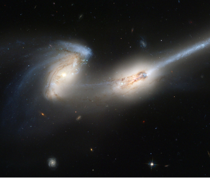
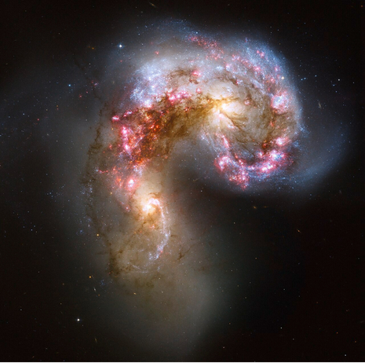
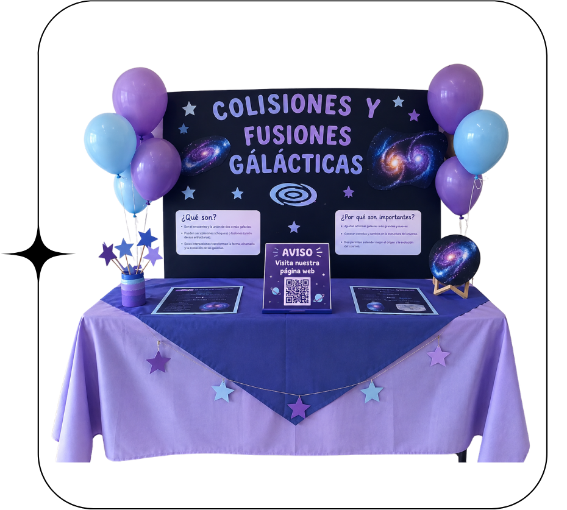

Cuando dos cuerpos chocan, nada vuelve a ser como antes: así comienzan las colisiones y fusiones.
Que son: Las colisiones y fusiones son fenómenos físicos que ocurren cuando dos o más cuerpos interactúan. Una colisión sucede cuando los cuerpos chocan y pueden rebotar o cambiar su movimiento. En una fusión, los cuerpos chocan y quedan unidos formando un solo objeto; este caso se conoce como colisión perfectamente inelástica. Durante las colisiones, el momento lineal se conserva, aunque la energía cinética puede conservarse o disminuir dependiendo del tipo de colisión.
Por qué vale la pena entenderlo: Entender las colisiones y fusiones vale la pena porque nos ayuda a comprender cómo interactúan los objetos y cómo cambian su movimiento después de un choque. Además, este conocimiento tiene aplicaciones en situaciones de la vida real, como los accidentes de tránsito, los deportes, la ingeniería y el diseño de sistemas de seguridad.
Tercer párrafo: qué va a encontrar el visitante en este sitio.
Verbo en infinitivo, qué quieren lograr y para qué.
Este proceso tiene 5 etapas las cuales son:
Esto tienes su consecuencias, las cuales son:

El proceso o el mecanismo, paso a paso.
CIFRA
Qué significa esa cifra, en una frase.
Las magnitudes que hacen concreto el fenómeno.

Qué encuentra el visitante.
| El experimento físico muestra | El sitio web muestra |
|---|---|
| — | — |
| — | — |
